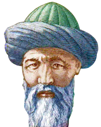

Kutadgu Bilig, 11. yüzyılda Karahanlı Uygur Türklerinden Yusuf Has Hacib'in Doğu Karahanlı hükümdarı Tabgaç Uluğ Buğra Kara Han'a atfen yazdığı ve takdim ettiği Türkçe eserdir.
- Tanrı Azze Ve Cellenin Övgüsünü Söyler
- Peygamber Aleyhi's-Selâmın Övgüsünü Söyler
- Dört Sahabenin Medhini Söyler
- Parlak Bahar Mevsimini Ve Büyük Buğra Han'ın Övgüsünü Söyler
- Yedi Yıldızı Ve On İki Burcu Söyler
- İnsan Oğlunun Değerinin Bilgi Ve Akıldan Geldiğini Söyler
- Dilin Meziyetini Ve Kusurunu, Faydasını Ve Zararını Söyler
- Kitap Sahibi Kendi Özrünü Söyler
- İyilik Etmenin Medhini Ve Faydalarını Söyler
- Bilgi İle Aklın Meziyet Ve Faydalarını Söyler
- Kitabın Adını, Mânasını Ve Kendisinin İhtiyarlığını Söyler
- Söz Başı Hükümdar Kün-Toğdı Hakkında
- Ay-Toldı'nın Hükümdar Kün-Toğdı Hizmetine Geldiğini Söyler
- Ay-Toldı'nın Hükümdar Kün-Toğdı'nın Huzuruna Çıktığını Söyler
- Ay-Toldı Hükümdara Kendisinin Saadet Olduğunu Söyler
- Ay-Toldı Hükümdara Devlet Sıfatını Söyler
- Hükümdar Kün-Toğdı Ay-Toldı'ya Adalet Vasfını Söyler
- Hükümdar Kün-Toğdı Ay-Toldı'ya Adalet Vasfının Nasıl Olduğunu Söyler
- Ay-Toldı Hükümdara Dilln Fazîletini Ve Sözün Faydalarını Söyler
- Saadetin Devamsızlığını Ve İkbâlin Dönekliğini Söyler
- Ay-Toldı'nın Oğlu Öğdülmiş'e Nasihat Verdiğini Söyler
- Ay-Toldı'nın Oğlu Öğdülmiş'e Öğüt Verdiğini Söyler
- Ay-Toldı'nın Hükümdar Kün-Toğdı'ya Vaslyet-Nâme Yazdığını Söyler
- Hükümdar Kün-Toğdı'nın Öğdülmiş'i Çağırdığını Söyler
- Öğdülmiş'in Hükümdar Kün-Toğdı'nın Huzuruna Çıktığını Söyler
- Öğdülmiş'in Hükümdar Kün-Toğdi'nin Hizmetine Girdiğini Söyler
- Oğdülmiş Hükümdara Aklın Tarifini Söyler
- Beyliğe Lâyık Bir Beyin Nasıl Olması Gerektiğini Söyler
- Öğdülmiş Beylere Vezir Olacak İnsanın Nasıl Olması Gerektiğini Söyler
- Öğdülmiş Hükümdara Kumandanın Nasıl Olması Lâzim Geldiğini Söyler
- Öğdülmiş Hükümdara Ulu Hâcibin Nasıl Bir İnsan Olması Gerektiğini Söyler
- Öğdülmiş Hükümdara Kapıcı-Başının Nasıl Olması Gerektiğini Söyler
- Öğdülmiş Hükümdara Elçi Göndermek ıçin Nasıl Blr İnsan Lâzım Olduğunu Söyler
- Öğdülmiş Hükümdara Kâtibin Nasıl Olması Gerektiğini Söyler
- Ögdilmiş Hükümdara Hazinedarın Nasıl Blr İnsan Olması Gerektiğini Söyler
- Öğdülmiş Hükümdara Aşçı-Başının Nasıl Olması Gerektiğini Söyler
- Öğdülmiş Hükümdara İçkici-Başının Nasıl Olması Gerektiğini Söyler
- Öğdülmiş Hükümdara Hizmetkârların Beyler Üzerindeki Haklarının Neler Olduğunu Söyler
- Hükümdar Kün-Toğdı'nın Odgurmış'a Mektup Yazıp Gönderdiğini Söyler
- Öğdülmiş in Odgurmış'ı Ziyaretini Söyler
- Odgurmış'ın Öğdülmiş İle Münazara Ettiğıni Söyler
- Odgurmış Öğdülmiş'e Dünyanın Kusurlarını Söyler
- Öğdülmiş Odgurmış'a Dünya Vâsıtası İle Âhiretin Kazanılmasını Söyler
- Odgurmış'ın Hükümdara Mektup Yazıp Gönderdiğini Söyler
- Hükümdar Kün-Toğdı'nın Odgurmış'a İkinci Mektubu Gönderdiğini Söyler
- Öğdülmiş'in Odgurmış İle İkinci Defa Münazara Ettiğini Söyler
- Öğdülmiş Odgurmış'a Beylere Hizmet Etmenin Usûl Ve Nizâmını Söyler
- Öğdülmiş Kapıdaki Hizmetkârlar İle Nasıl Geçinileceğini Söyler
- Öğdülmiş Odgurmış'a Avam İle Nasıl Münâsebet Kurulması Gerektiğini Söyler
- Ali-Evlâdı İle Münâsebeti Söyler
- Âlimler İle Münâsebeti Söyler
- Tabipler İle Münâsebeti Söyler
- Efsuncular İle Münâsebeti Söyler
- Rüya Tâbircıleri İle Münâsebeti Söyler
- Müneccimler İle Münâsebeti Söyler
- Şâirler İle Münâsebeti Söyler
- Çiftçiler İle Münâsebeti Söyler
- Satıcılar İle Münâsebeti Söyler
- Hayvan Yetiştirenler İle Münâsebeti Söyler
- Zenâat Erbabı İle Münâsebeti Söyler
- Fakirler İle Münâsebeti Söyler
- Nasıl Evlenileceğini Söyler
- Çocukların Nasıl Terbiye Edileceğini Söyler
- Hizmetçilere Nasıl Muamele Edileceğini Söyler
- Öğdülmiş Odgurmış'a Ziyâfete Gitmek Âdabını Söyler
- Öğdülmiş Odgurmış'a Ziyafete Davet Usûlünü Söyler
- Odgurmış Öğdülmiş'e Dünyadan Yüz Çevirip, Olana Kanâat Ettiğini Söyler
- Hükümdar Kün-Toğdı'nın Odgurmış'ı Üçüncü Defa Davet Ettiğini Söyler
- Odgurmış'ın Öğdülmiş'e Geldiğini Söyler
- Hükümdar Kün-Toğdı'nın Odgurmış İle Görüştüğünü Söyler
- Odgurmış'ın Hükümdara Öğüt Verdiğini Söyler
- Öğdülmiş Hükümdara Memleketi Tanzim Etme Usûlünü Söyler
- Öğdülmiş İn Geçen Hayatına Acıyarak Tövbe Ettiğini Söyler
- Odgurmış'ın Öğdülmiş'e Tavsiyede Bulunduğunu Söyler
- Doğruluğa Karşı Doğruluk Ve İnsanlığa Karşı İnsanlık Gösterilmesini Söyler
- Odgurmış'ın Hastalanarak Öğdülmiş'i Çağırdığını Söyler
- Öğdülmiş Odgurmış'a Rüya Tâbirini Söyler
- Odgurmış Öğdülmiş'e Rüya Gördüğünü Söyler
- Öğdülmiş Odgurmış'ın Rüyasını Tâbir Eder
- Odgurmış Bu Rüyaya Başka Bir Tâbir Söyler
- Odgurmış'ın Öğdülmiş'e Nasîhat Ettiğini Söyler
- Kumaru Öğdülmiş'e Odgurmış'ın Öldüğünü Söyler
- Kumaru'nun Öğdülmiş'e Baş-Sağlığı Dilediğini Söyler
- Öğdülmiş'in Odgurmış İçin Matem Tuttuğunu Söyler
- Hükümdarın Öğdülmiş'e Baş-Sağlığı Dilediğini Söyler
Eklemeler